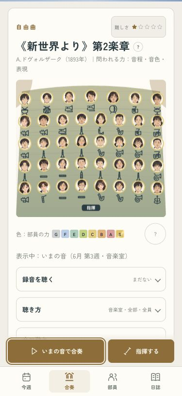
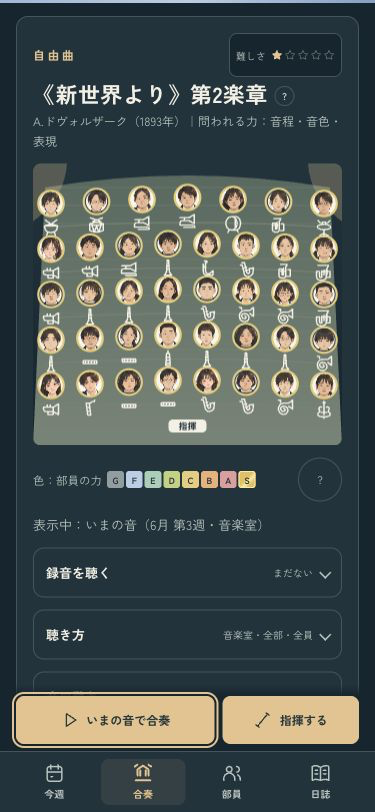
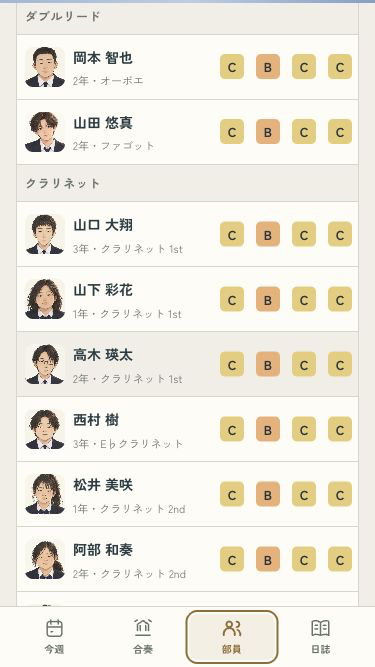
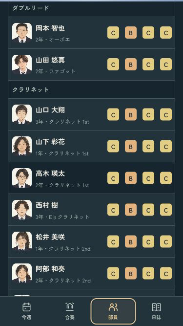
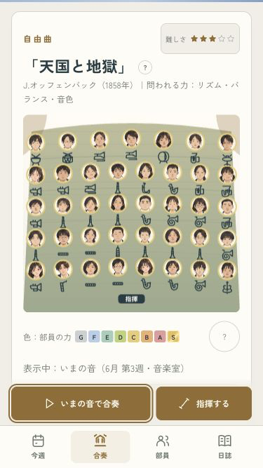
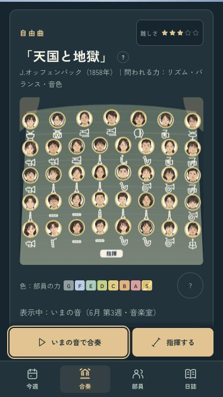

B · 舞台の中へ
停止したら、次の操作へ。
合奏で止めたら再生ボタンへ。別のタブで止めたら、今のタブへ戻ります。停止ボタンを押しても、読んでいた位置のまま。名前の入力中に曲が終わっても、入力を続けられます。


別タブでは、読んでいた場所を保つ
部員の一覧を667pxスクロールした位置で止めても、タブと位置がそのまま残ります。


小さい画面と、読み込み中止


停止・自然終了・待機中止・入力の保持を確認済み。
iPhoneへ更新済み。今回は端末ロック中のため起動は未確認です。
ミラーリングなし · codex/design · pushなし · 変更と確認の記録